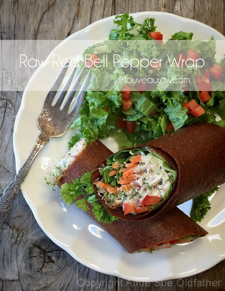
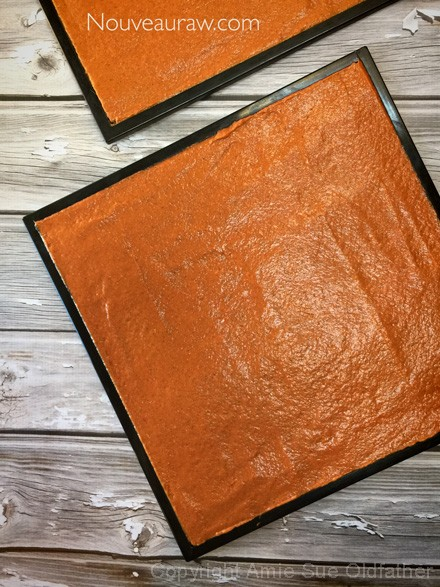
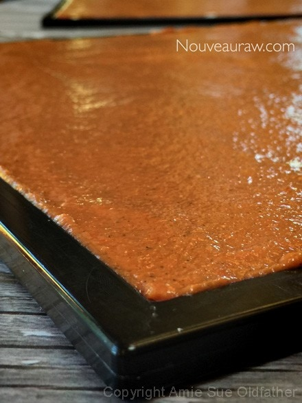
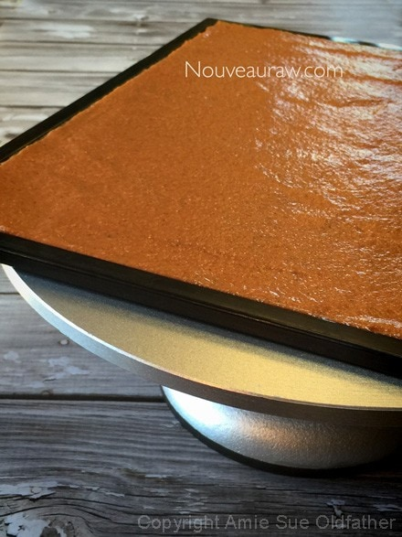

Red Bell Pepper Wrap

~ raw, vegan, gluten-free, nut-free ~
I really enjoy making raw wraps but it has taken many many trials and errors over the years to figure out just what makes them “tick.” First off, we know that they need to taste good.
It doesn’t matter if that wrap rolls perfectly (!), if it doesn’t taste good, it will roll itself right into the compost heap. After the flavors are established, we have to know just how to get that Olympic gymnast flexibility, because, without that, you just don’t have a wrap.
The two basic keys in making a wrap are using the right ingredients and drying it to the perfect pliable texture. Let’s first talk about ingredients.
Here I used psyllium and avocado to help facilitate that flexible, rollable texture. In the past, I have used flax seeds, chia seeds, mango, and bananas. All of those ingredients tend to lead to pliable wrap.
The dehydrating process is the next important step… under-done and the wrap will stick to the dehydrator trays. Over-dried and it becomes too stiff to roll and when encouraged, no matter how gentle of a hand you may have, it will crack and fall apart on you. So, it is best to select a day that you will be home so you can periodically check in on the wrap while it is drying.
Don’t be intimidated when it comes to making wraps… it just takes a good recipe, attention, and patience. They are well worth their weight in gold. I used to think of wraps as a neutral vessel. Much like my Wonder Bread eating days. To me, it had one job that was to hold my prize-winning sandwich ingredients together… but over time I have learned to incorporate flavors into the wrap so that it can add another layer of taste… not to compete but to compliment the inner ingredients. I better “wrap” this up so you can get busy in the kitchen. :)
Ingredients:
Yields 7 cups batter
- 3 large (540 g) red bell peppers
- 4 medium (510 g) tomatoes
- 1 large (347 g) zucchini, peeled
- 1 large (221 g) Hass avocado
- 3 Tbsp psyllium husk
- 1 Tbsp + 2 tsp Italian seasoning
- 1 tsp ground onion powder
- 1 tsp Himalayan pink salt
- 1 tsp black pepper
Preparation:
- This recipe creates a large volume of batter so make sure that your blender or food processor can handle 7 cups worth of batter. ( or do 1/2 batch at a time)
- Roughly chop the bell peppers, remove the stem, inside seeds, and ribbing. Place in blender and process to a liquid.
- Roughly chop the tomatoes, add to blender, and process.
- Peel and rough chop the zucchini. Add to the blender and process.
- Peel and remove the seed from the avocado and place it in the blender and process.
- Add the psyllium and seasonings. For the last time, process until everything is well mixed.
- Psyllium will start to thicken if you goof around too long. Just warning you. :)
- If you don’t have psyllium, I recommend getting some but ground chia seeds can be used in their place.
- Spreading the batter on non-stick sheets can be done in several ways; in circles or large squares. They can also be made small, medium, or large.
- For a full sheet – spread 2 cups of batter from edge to edge.
- I use Excalibur dehydrators so it is one large square.
- Spread the batter according to what machine and dimensions that you have.
- Take it all the way up the edge of the dehydrator tray and when you are all done, wipe the edges clean with a paper towel.
- This amount of batter created 3 full-sized trays plus I made a circular wrap that used 1 cup of batter.
- Make sure that the batter is spread evenly so it will all dry at the same rate.
- Dehydrate at 115 degrees (F) for about 5-6 hours. At this time, test to see if you can flip the wrap over directly onto the mesh screen.
- Carefully peel back the non-stick sheet and continue to dry until you don’t see any light and dark spots.
- Place another mesh sheet over the wrap to help hold it flat while it completes the dry time.
- If the batter is leaving wet spots on the non-stick sheet, that means it isn’t ready to be flipped. Keep drying for a bit longer and retest.
- The wrap shouldn’t be sticky to the touch when dry and it should be flexible.
- If the wrap becomes too stiff to fold, spritz the backside with water. Don’t use too much though.
- Full sheet – if you made a full sheet wrap, you can do many things with it:
- To store: lay the wrap on plastic wrap and roll into a tube, placing it in a zip-lock bag.
- To use: Make one large sandwich, placing the filling along one whole edge, roll, and then cut into serving-sized portions. Or you can cut it into 4 equal-sized squares and make individual sandwich wraps.
- These wraps, if properly stored can last for several weeks if not longer.
- To store: place a piece of parchment paper in between each wrap so they don’t stick to one another. Slide into a zip-lock bag (freezer one if you plan on freezing them). Be sure to remove the air from the bag each time you open it. If the wraps get too dry you can spritz them with water to soften them.
- Load the wraps with your favorite sandwich making and enjoy! Here are some filling ideas:



© AmieSue.com